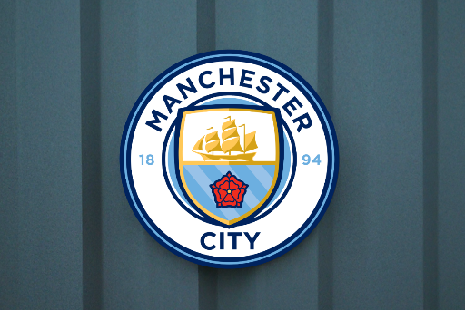

Soccer Ranker
Soccer Ranker
Manchester City FC: Los 10 Mejores Actualmente Jugando Jugadores
Los aficionados de todo el mundo votaron para determinar qué jugador del MCFC les parecía mejor y los resultados muestran quién tiene la puntuación más alta!
PUBLICADO MAR 4, 2024

Para celebrar el 144 aniversario de la creación del Manchester City y sus recientes triunfos en la UCL y el triplete, se pidió
a los aficionados que enviaron sus votos sobre quiénes son sus mejores jugadores, y los resultados se contaron en la encuesta
de los 10 mejores del MCFC realizada por r/MCFC de reddit.
Con una amplia variedad de jugadores para elegir, no sorprende que muchos votantes tuvieran dificultades para elegir al
mejor. Sin embargo, algunos jugadores han destacado más ante los aficionados y disfrutadores, ya sea por sus habilidades,
personalidad, o muchas mas. El equipo no estaría lo mismo sin ellos.
10
Ederson
El portero de clase mundial del MCFC. No es el típico portero, ya que, con su excepcional juego de pies y habilidades de distribución, esencialmente se transforma en un jugador de campo extra. Es un aspecto verdaderamente extraordinario que revoluciona cómo El Manchester City construye ataques desde atrás. Su precisión en los pasos de larga distancia es asombrosa, lo que le da al City la capacidad de cambia de juego rápidamente y encuentra atacantes en espacios peligrosos. La valentía de Ederson y el dominio de su área lo convierten en una persona tranquilizadora. Presencia en defensa. Y más allá de ser un portero, es una parte integral de la filosofía de ataque del City, lo que lo convierte en un activo invaluablepara el equipo.
9
Nathan Aké
El sólido defensor del MCFC. Es un defensa central zurdo por naturaleza, una rareza que añade equilibrio y flexibilidad a La zaga del City. Su inteligencia táctica y lectura del juego le permiten anticipar las amenazas y hacer crucial intercepciones. Tiene compostura con el balón y desmayos cómodos desde atrás, lo que se adapta al sistema basado en la posesión del City. estilo. Además, su versatilidad lo hace capaz de jugar como lateral izquierdo, proporcionando una cobertura esencial en múltiples posiciones.
8
Julián Álvarez
La dinamo argentina del MCFC. Apodada "El Araña", es conocido por su inteligencia y carreras potentes, pases y su capacidad dinámica para marcar goles, lo que lo convierte en el jugador ideal para el ataque del Manchester City. Es un finalizador clínico, con una habilidad especial para estar en el lugar correcto en el momento correcto. Su movimiento sin balón es inteligente, altera constantemente las defensas y crea espacio para él y sus compañeros de equipo. Él también tiene un ética de trabajo incansable, presionando incansablemente para recuperar el balón.
7
Bernardo Silva
El maestro del mediocampo del MCFC. Su delicadeza técnica es inigualable; su control cercano y su dribbling ponen a los defensores del revés. Su visión y rango de pase son sublimes, lo que le permite desbloquear defensas con precisión. También es un trabajador incansable - donde su presión incesante y sus movimientos inteligentes lo convierten en una amenaza constante dentro y fuera del balón. Esta combinación de creatividad, ritmo de trabajo e inteligencia táctica hacen de Bernardo Silva un activo inestimable para el Manchester City. Un hombre muy alabado por el propio Pep Guardiola.
6
Rúben Dias
La potencia central del MCFC. Con un tackle magnífico, un posicionamiento astuto y un dominio aéreo, forma un impenetrable muro en el corazón de la defensa. La excelente lectura del juego por parte de Dias le permite anular las amenazas y organizar su línea defensiva. Su compostura con el balón y su capacidad para lanzar ataques desde atrás hacen un verdadero central moderno. Su calidad y experiencia también le dan la capacidad de realizar tremendas paradas, como su famoso acto instintivo de cabecear el balón fuera del poste de la portería en los últimos minutos de la final de la UCL en 2023 (Para la mayoría de los CB, eso habría sido un gol en propia meta). La influencia de Dias es innegable; su presencia eleva a aquellos A su alrededor su impacto en los equipos es transformador.
5
John Stones
El defensor excepcional del MCFC. Si bien su posición más cómoda es la de central, la versatilidad de los Stones Le permite jugar como lateral derecho, mediocampista defensivo e incluso como mediocampista central en ocasiones. Y con esto, también es conocido por su compostura y habilidades para jugar con la pelota. Es excepcionalmente cómodo con la posesión, capaz de romper líneas con pases precisos y iniciar ataques desde lo profundo. Stones también tiene una presencia imponente en el aire, ganando cabezazos y duelos con delanteros físicos. Su lectura del juego y su conciencia posicional son excelentes, lo que le permite realizar intercepciones oportunas. También es conocido por su tendencia a realizar paradas importantes en la línea de gol.
4
Phil Foden
El prodigio local del MCFC. Su meteórico ascenso en el Manchester City es un testimonio de su talento excepcional y dedicación. La magia de Foden radica en su brillantez técnica. Su control cercano, su primer toque sedoso y su capacidad para atravesar Los defensores son que recuerdan a los legendarios centrocampistas españoles. Su visión es excelente, lo que le permite distinguir las defensas. pases y crear oportunidades de gol de la nada. Es verdaderamente el chico estrella del Manchester City.
3
Erling Haaland
La infame máquina de goles del MCFC. Con 52 goles y 9 asistencias y múltiples récords batidos en solo su primera temporada en Manchester City, no hay mucho más que decir sobre este hombre. Él es verdaderamente una bestia, con las cualidades de de ser un futuro ganador del ballon d'or; incluso ya fue subcampeón en 2023. Por la forma en que anota con tanta facilidad que casi parece robótico. Pero esto se debe realmente a su fantástica comprensión del juego. Uno de esos aspectos es su posicionamiento excepcional, que ha contribuido en gran medida a su abundancia de goles en todas las competiciones. Él sabe cuándo estar en el lugar correcto en el momento correcto con más frecuencia que muchos otros.
2
Rodri
El jugador más importante del MCFC. Como mediocampista defensivo tradicional, tiene una excelente disciplina táctica retención de bolas - que en conjunto conducen a un mayor control del ritmo del juego, lo cual es crucial para el estilo de juego del MCFC. También posee un gran rango de pase y precisión. Y con eso, puede distribuir el balón de manera efectiva desde posiciones profundas, iniciar ataques y pasar de la defensa al ataque sin problemas. A menudo también se le considera como jugador clave con su habilidad para marcar goles, incluso como DM. Su gol en la final de la Liga de Campeones de 2023 fue la causa de la primera victoria del MCFC en la UCL en su historia.
1
Kevin De Bruyne
El mejor jugador del MCFC, con diferencia. Con su excepcional habilidad para pasar e inteligencia táctica, es ampliamente considerado un creador de juego de clase mundial. A menudo llamado el "rey de las asistencias", es conocido principalmente por sus asistencias, que muestran su gran habilidad en el deporte: para la mayoría de sus asistencias son verdaderamente excepcionales. Esa excepcionalidad ha batido múltiples récords, incluido convertirse en el jugador con la mayor cantidad de asistencias en las principales ligas en la última década. Con la introducción de Erling Haaland al MCFC también, KDB y Haaland se han popularizado como un dúo mortal con su juego de enlace - consiguiendo hasta 4 asistencias y 4 goles entre ellas en un solo juego a veces. Una fuerza a tener en cuenta.